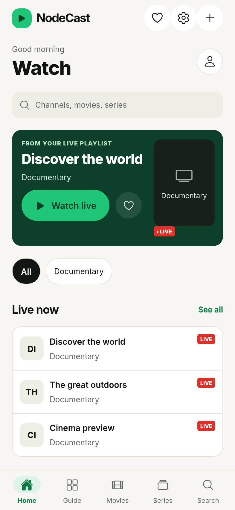
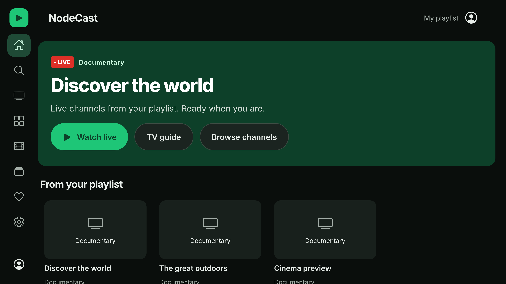
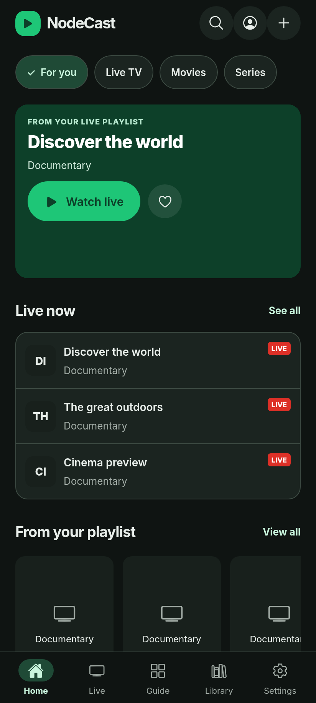
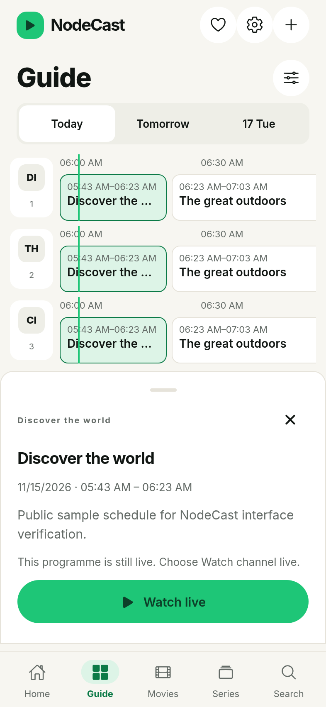
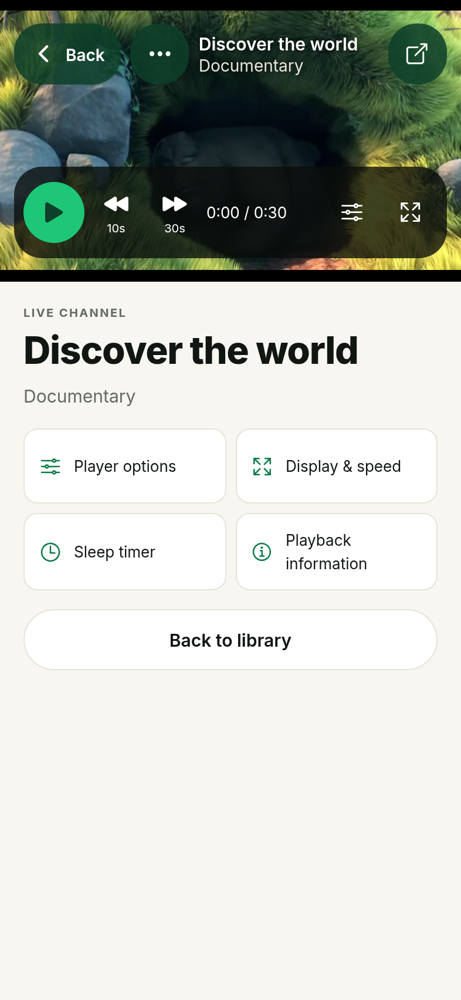
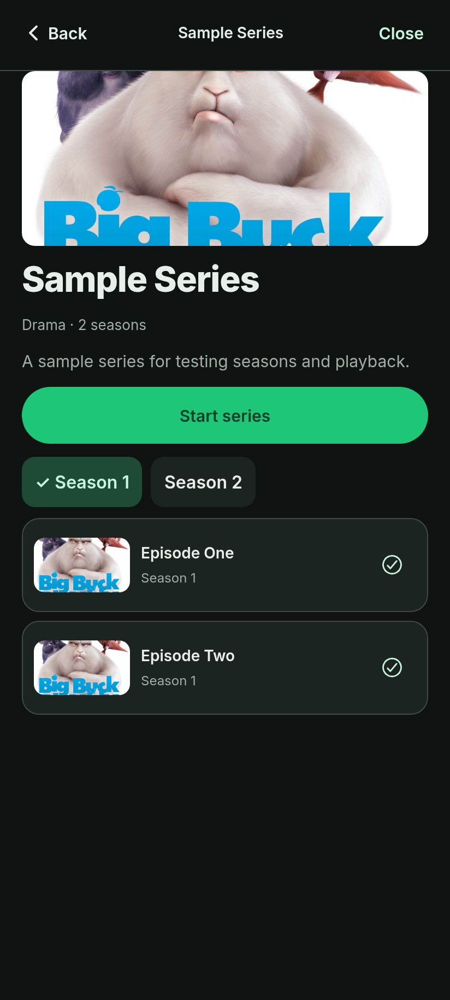
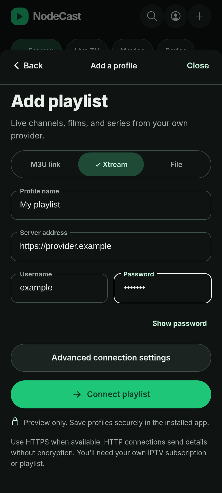
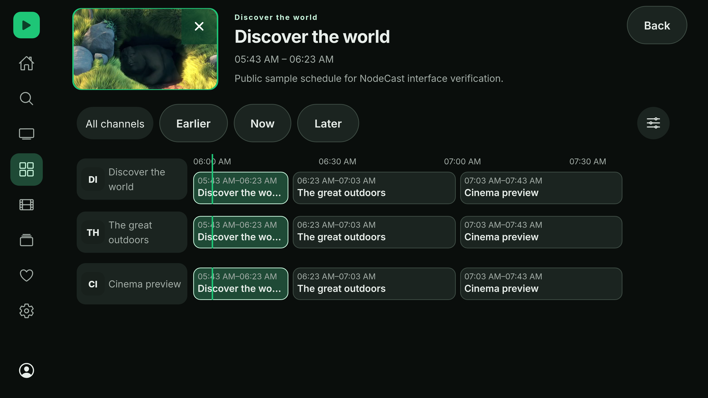

Bring what you watch.
Connect an M3U link, Xtream Codes server or playlist file. Your playlists and favorites stay separate.
FREE. OPEN SOURCE. YOURS.
Live TV, films and your next favorite series.
One thoughtful player, made for the screen you’re on.
No account. No player subscription. Bring your own content.



Connect an M3U link, Xtream Codes server or playlist file. Your playlists and favorites stay separate.
Resume films and episodes, save favorites and find a channel quickly. Your settings stay on your device.
Browse your provider’s schedule and supported catch-up. Adjust playback without losing sight of the video.
A LOOK INSIDE
A calm iPhone experience. Familiar Android patterns.
A TV interface built for your remote.





Preview of the upcoming design, captured from the running application using public sample content and a test playlist. Native builds are deferred; current downloads use the previous design. No channels are included. AirPlay and Picture in Picture depend on the device, stream and playback engine. See the audit and screenshot provenance.
CHOOSE YOUR SCREEN
Current downloads: 0.6.7 · Design preview: 0.7.0
Standalone apps. No PC or Expo Go needed to play.
IOS · IPHONE
Unsigned IPA for sideloading with your own Apple ID. Free signing normally renews every seven days.
Download IPA ↓iPhone installation guide →ANDROID · PHONE & TABLET
The phone APK with dark surfaces, familiar controls and all your playlists. Android 7 and later.
Download APK ↓Android installation guide →FIRE TV · ANDROID TV
A separate landscape APK built for D-pad navigation. Includes a TV guide and provider-supported catch-up.
Download TV APK ↓TV installation guide →Keep the same app signing identity when updating to retain saved profiles. Release files and checksums ↗
MAKE YOURSELF AT HOME
WHAT’S NEW
Upcoming version 0.7.0 · Design preview
FREE, ALWAYS
Support is optional and appreciated. It helps keep the player improving.